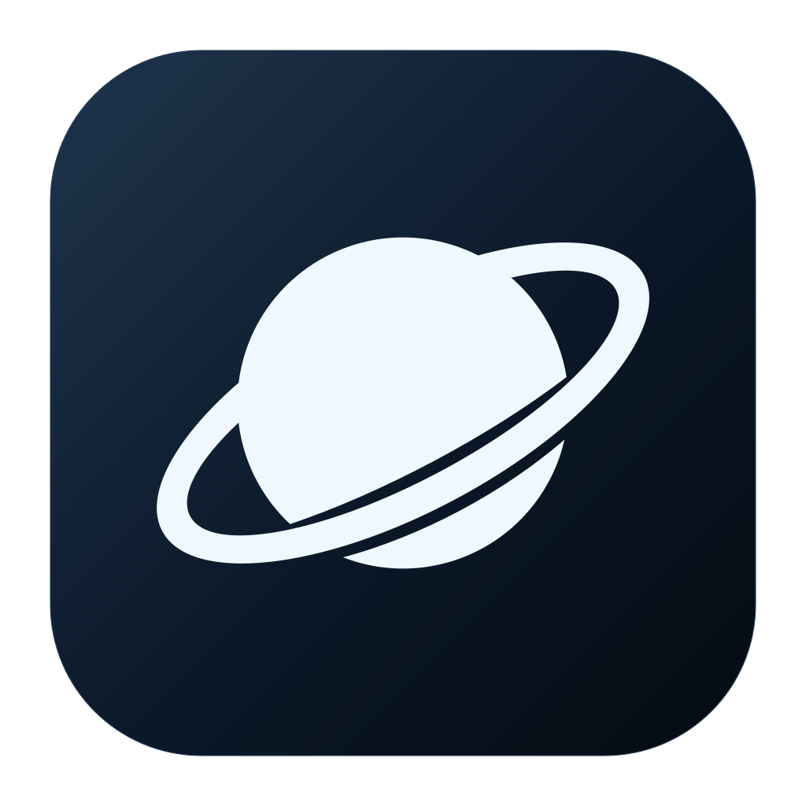

Oracle / revisão V3
Michroma + planeta.
A fonte que você escolheu, com o símbolo ligado ao universo do Oracle. Um planeta de órbita inclinada, apresentado em uma cor e aplicado ao ícone do Mac.
Fonte escolhida · desenho do planeta em avaliação · aplicativo preservado
{kind=link}
Veja o logo em claro e escuro.


Prévia de identidade; o ícone do aplicativo ainda não foi substituído.
Fonte definida: Michroma.
Abrir no Google Fonts ↗ORACLE
Michroma Regular 400, de Vernon Adams. As proporções largas e geométricas dão o caráter tecnológico. O arquivo original do Google Fonts está incluído, junto da licença SIL Open Font License 1.1.
Os SVG/PDF usam letras convertidas em contornos, preservando o desenho original da fonte.
Arquivos desta proposta.
Pacote V3 · ZIPPrancha · PDFLogo horizontal · SVGSímbolo · SVGÍcone escuro · PNGÍcone claro · PNGNotas, licença e estado
{kind=link}
{kind=link}
{kind=link}
{kind=link}
O planeta e os materiais são propostas. A montagem final no Icon Composer e a aplicação ao bundle aguardam aprovação do desenho.